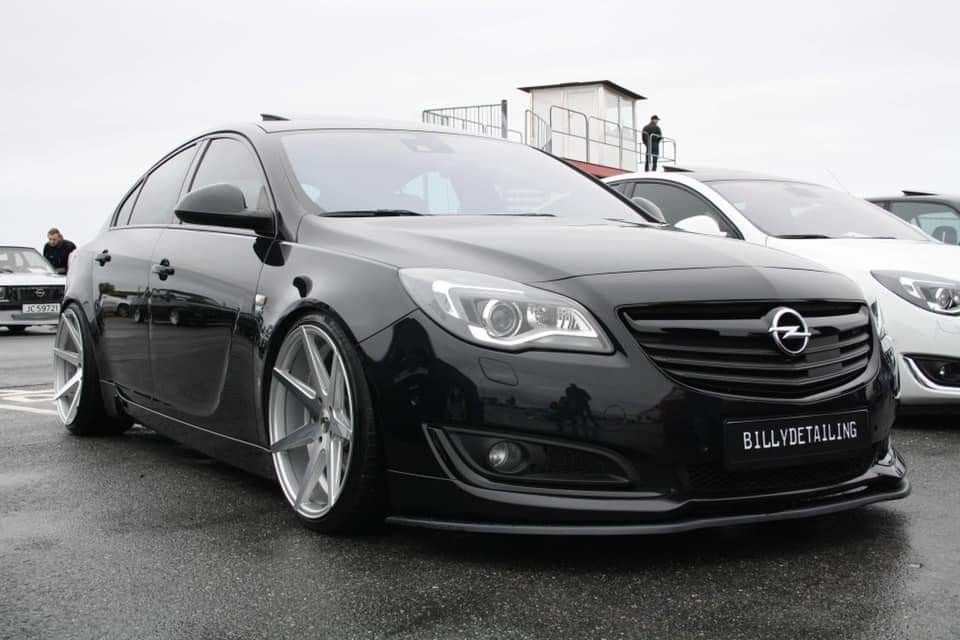
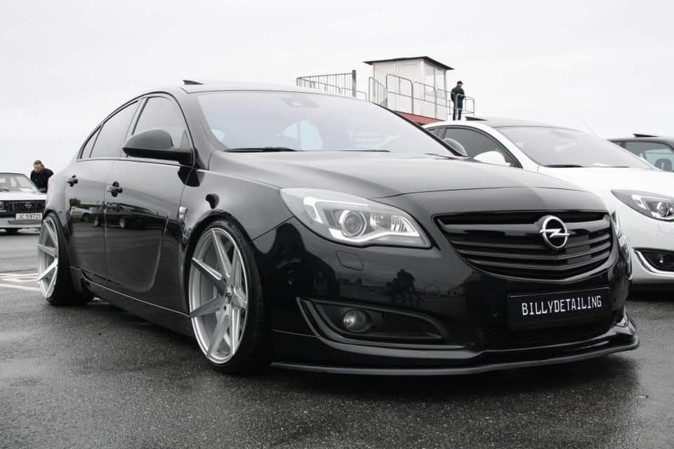

12+
завершених етапів
VLAD OPEL GARAGE
Перетворення сімейних універсалів на впевнені щоденні проєкти з акцентом на надійність, естетику та реалістичні апгрейди без зайвого пафосу.
завершених етапів
ключові моделі
експерименти та діагностика
Кузов та геометрія
OEM+Салон
Night TechПідвіска
Daily ComfortПро проєкт
VLAD OPEL GARAGE — це персональний простір, де комбінується досвід власника, любов до платформ GM та послідовний підхід до модернізації реальних машин, а не тільки картинок.
Використовуються лише перевірені рішення, адаптовані для Zafira, Astra та Insignia.
Жодних надмірностей — тільки покращення, які можна утримувати щодня.
Кожна модифікація проходить перевірку в реальних поїздках містом та трасою.
План-проєкт, де кожен етап логічно продовжує попередній.
Ключові моделі
Сімейний мінівен, який перетворюється на універсал для подорожей: оновлена підвіска, реставровані диски та салон у стилі Touring.
Компакт, що поєднує щоденну зручність та спортивні нотки: чіп-тюнінг, жорсткіші пружини та акцент на керованість.
Універсал для далеких поїздок: шумоізоляція, реставрація кузова, комфорт водія та пасажирів на першому місці.
Галерея До / Після
Приклади того, як вигляд і настрій авто змінюються після базових етапів тюнінгу.

Вирівняний кузов, оновлений блиск лаку, диски після полірування та новий салон.

Правильний кліренс, акцент на керованість і чистий спортивний силует.
 

Преміальний вигляд, шумоізоляція салону та збережений OEM-стиль.
Плани тюнінгу
Діагностика агрегатів, оновлення мастил, відновлення ходової та електроніки.
Антикор, полірування, локальне фарбування та захисні покриття.
Перетяжка сидінь, мультимедіа, додаткове освітлення та шумоізоляція.
Налаштування ECU, впуск/випуск, покращення гальм і охолодження.
Фінальні акценти: диски, емблеми, дрібні деталі, які роблять авто «своїм».
Контакт
Напишіть, яка модель вас цікавить, і я поділюся доступними етапами, орієнтовним бюджетом та чергою на сервіс. Надалі тут можуть з’явитися реальні послуги.